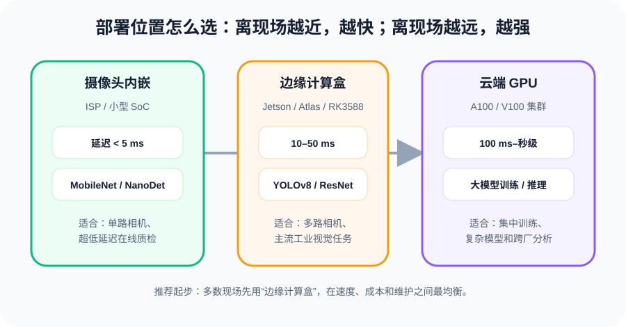
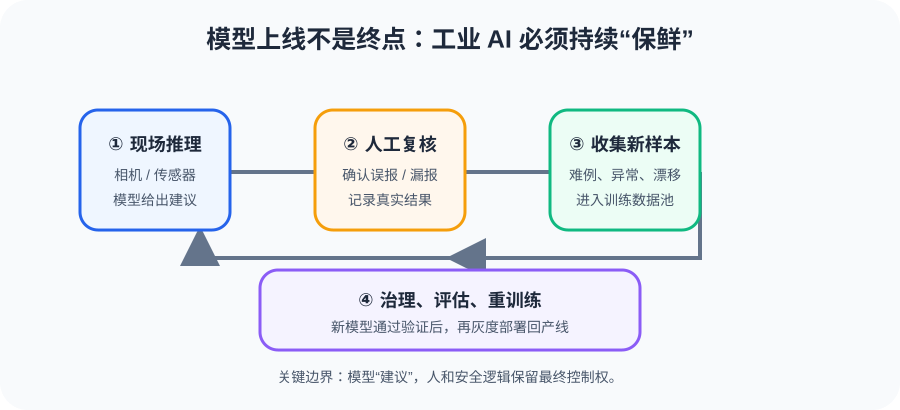
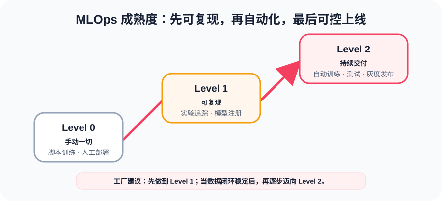

模型训练完只是起点，部署上线才是真正的战场
很多团队都有过这样的经历：Jupyter Notebook 里模型跑出 99% 的精度，老板看了很满意，结果上了产线，精度直接掉到 70%。实验室和产线之间，隔着一整条鸿沟。
为什么精度会"跳水"？最核心的五个原因：
光照恒定，相机固定
数据干净，标注准确
推理速度没限制
模型跑在 RTX 4090
结果只给算法团队看
光线随时间变化，相机震动
数据有噪声，标注可能错
必须 < 50ms 一帧
模型跑在 Jetson NPU
结果要进 MES，操作工要看
行业里有个残酷的统计：只有约 30% 的 PoC（概念验证）模型最终成功上了产线。剩下的 70%，大部分不是败给了算法，而是败给了工程化。
这五大"杀手"按严重程度排序：
| # | 杀手 | 典型表现 | 致命程度 |
|---|---|---|---|
| 1 | 数据漂移 | 换批材料、换季节，模型就不是那个模型了 | ★★★★★ |
| 2 | 实时性要求 | 产线每秒走 10 个产品，推理必须 ≤50ms | ★★★★ |
| 3 | 边缘算力限制 | NPU 内存只有 8GB，大模型塞不进去 | ★★★★ |
| 4 | 系统集成复杂 | PLC → SCADA → MES → HMI，每一步都有坑 | ★★★ |
| 5 | 人为因素 | 操作工不理解结果 → 忽略报警 → 系统形同虚设 | ★★★ |
PoC 阶段的精度，只是"驾照笔试"通过；产线部署，才是"真车上路"。能在实验室跑通不等于能用。真正要关注的是：在产线实际条件下，模型还能不能扛住。
产线上的计算资源是有限的。你的模型就像一个 200 斤的壮汉，跑百米当然快不了 —— 得减肥，还得保证减了肥力气不能差太多。
边缘设备（比如 Jetson Orin）的显存只有 8~32GB，而一个 ResNet-50 模型用 FP32 精度就要占约 100MB —— 看着不大？那 YOLOv8-x 呢？EfficientNet-L2 呢？更不用说 Transformer 系列。加上同时要跑 4~8 路摄像头推理，内存分分钟炸。
所以我们需要量化 —— 用更少的位数来表示模型的权重。
原理：模型训练完了，拿几百张"代表性图片"校准一下，直接把权重从 FP32 转成 INT8
优点：不需要重新训练，几小时搞定
缺点：精度损失可能稍大（1~3%）
适合：快速上线，精度要求不是极致的场景
原理：训练时就"假装"自己会被量化，让模型提前适应低精度
优点：量化后精度损失最小（<1%）
缺点：需要重新训练，时间长
适合：精度敏感、必须 INT8 的关键场景
除了量化，还有一种"减肥"方式叫剪枝：找出网络里不重要的权重，直接删掉。就像修剪树枝 —— 砍掉细枝末节，主干更粗壮。
剪枝后的模型变稀疏（很多权重为 0），体积更小、推理更快。常和量化配合使用：剪枝 → 量化 → 部署，效果叠加。
先用 PTQ 试水，看精度掉多少。如果掉在可接受范围（<2%），直接上线；如果掉太多，再考虑 QAT。别上来就 QAT —— 浪费训练时间。
模型减肥之后，接下来的问题是：算力放在哪里？全放云端，延迟受不了；全放边缘，算力不够。答案是分层部署。

最常见的方案是边缘-云混合：轻量推理放在边缘盒子（满足实时性），重型训练和数据分析放在云端。边缘的推理结果通过 MQTT/OPC-UA 汇报给 MES 系统，同时原始图像定期上传到云端用于模型重训练。
延迟要求 < 10ms？ → 摄像头内嵌或边缘盒子直连
模型 > 500MB？ → 边缘高端盒子或云端
需同时推理 8 路以上？ → Jetson AGX Orin 或多盒子集群
数据不能出工厂？ → 纯边缘，云端仅做训练环境
别一上来就考虑云端部署。工业场景的默认选择是边缘：延迟可控、数据不出厂、断网也能跑。云端只做"幕后"的训练和分析。
很多人以为模型部署上线就完事了。不是的 —— 部署才是开始。因为产线在不断变化：换了批次的原材料，来了新的缺陷类型，季节变了光照也变了。模型会"漂移"。
什么是模型漂移？简单说：你的模型是拿过去的经验训练的，但未来不按过去的套路来。
所以你需要一个数据闭环：部署 → 监控 → 收集失败案例 → 标注 → 重训练 → 重新部署。

新训练的模型不能直接替换旧模型 —— 万一更差呢？所以需要影子模式：
新旧模型同时运行，但只有旧模型的结果真正生效
新模型的输出做记录和对比，不等效就人工审查
优点：零风险，对比充分
把产线产品随机分两组，一组用旧模型，一组用新模型
跑一周后对比漏检率和误报率
优点：直接看真实效果
很多团队上线后就不管了，模型渐渐变差却没有人知道。数据闭环的核心不是"重训练"这个动作，而是持续监控的意识 —— 你得先知道模型在变差，才能触发后续动作。
一个模型上线，手动操作一堆文件，手动拷贝权重，手动在 NPU 上部署 —— 这就像每次发布软件都要手动编译、手动拷贝到服务器。DevOps 解决了软件的问题，MLOps 要解决模型的问题。
MLOps = DevOps + 数据版本 + 模型版本 + 实验追踪 + 自动部署。说白了就是：让模型的训练、测试、部署变成一条自动化的流水线，而不是每次都靠人肉操作。

MLOps 的几个关键组件：
| 组件 | 干什么 | 代表工具 |
|---|---|---|
| 实验追踪 | 记录每次训练的超参数、指标、权重 | MLflow, Weights & Biases |
| 模型注册中心 | 管理所有模型版本，哪个是生产版、哪个是测试版 | MLflow Model Registry |
| 数据版本化 | 像 Git 管代码一样管数据集 | DVC, LakeFS |
| 模型监控 | 线上实时监测精度、延迟、漂移 | Evidently, Grafana |
| CI/CD 流水线 | 自动训练 → 测试 → 部署 → 回滚 | Jenkins, GitLab CI |
别一上来就搞 Level 2。先从实验追踪开始 —— 每次训练自动记录参数和结果，光是这一步就能解决"上次那个效果好的模型到底怎么训的"的问题。然后逐步加模型注册、数据版本化……渐进式建设，不要一步到位。
有时候，模型本身没问题，精度也够，速度也行 —— 但就是上不了线。因为模型只是整个系统的一环，它得跟相机、网络、MES、操作工全部接上才行。这一"接"，才是最磨人的。
产线集成的几个"真拦路虎"：
算法团队花了三个月训练出一个 98% 精度的模型，满心欢喜推到产线。结果操作工看了一眼："这玩意儿我不信"，然后全程手动复检，AI 报警全忽略。
为什么？因为操作工不理解模型在判什么。如果 AI 只给一个"异常"标签，操作工不知道它看到了什么，自然不信任。解决方案：把模型关注的地方可视化出来（热力图/注意力图），让操作工能看到"AI 觉得哪里有问题"。
集成不是算法团队的活，是跨团队协作：算法搞模型、自动化搞 PLC 对接、IT 搞 MES 系统集成、工艺搞业务规则。缺少任何一环都会卡住。提前把接口定义好，各团队并行推进，这是最关键的。
这一节是实战经验总结，每一条背后都有人中过招。建议收藏，每上一条产线前对照检查一遍。
1. 光照：固定光源是第一优先级，比模型重要
2. 标注：花 80% 的时间在数据质量上都不为过
3. 速度：训练时就同步测 FPS，别等部署才发现
4. 影子：至少跑两周影子模式再切正式流量
5. 闭环：没有人标注新数据，模型一定会变差
6. 算力：先在目标硬件跑通 ONNX，再批量采购
7. 节拍：推理时间必须低于产线节拍的 70%（留余量）
8. 团队：一个人做全链路 = 一个人扛所有风险
9. 模型：缺陷检测从 ResNet/YOLO 开始，别上来就 Transformer
10. 沟通：和操作工聊一次，比看十篇论文管用
| 部署挑战 | 解决方案 | 关键工具/方法 |
|---|---|---|
| 实验室≠产线 | 产线数据采集 + 数据增强 | 固定光源、ISP、Domain Adaptation |
| 模型太大/太慢 | 量化 + 剪枝 | PTQ → QAT → Pruning |
| 算力放在哪 | 边缘-云分层部署 | Jetson(边缘主力) + GPU(云端训练) |
| 模型逐渐变差 | 数据闭环 | 监控 → 收集 → 标注 → 重训练 → 部署 |
| 部署靠人肉 | MLOps 自动化 | MLflow + DVC + CI/CD |
| 系统集成卡壳 | 分层对接 + 早期验证 | OPC-UA、MQTT、MES API |
| 操作工不信任 | 可解释性 + 影子模式 | 热力图、注意力可视化 |
模型精度是"必要条件"，但不是"充分条件"。真正决定项目能不能交付的，是量化后的精度是否够用、推理速度是否跟得上、系统能不能集成、操作工愿不愿意用。这四条全部通过，才算真正"落地"。
五讲走完，你从一个神经元怎么投票开始，学会了卷积看见缺陷、LSTM 听懂振动、五大场景怎么打仗，最后把这一切真正搬到产线上运行。
这就是工业AI的完整闭环 —— 从神经元到产线，你走过的这条路就是工业AI的完整闭环。
不是会训模型就够了，能稳定跑在产线上的模型，才叫"落了地"。